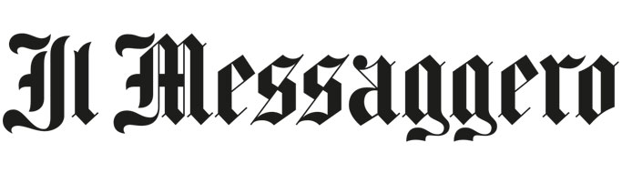

Gennaio 2024 – Attuale | Il Messaggero SPA (Roma)
Giornalista / Collaboratore – Redazione di articoli con cadenza quotidiana.
Communication Specialist
Professionista della comunicazione con 15 anni di esperienza tra giornalismo, media analysis, marketing e media relations, capace di coniugare scrittura, strategia e AI per costruire narrazioni che generano connessioni reali.
Navigo da anni nel governo dell’informazione e nella gestione delle relazioni istituzionali. Ho costruito la mia carriera tra redazioni e società di media monitoring, lavorando a stretto contatto con i principali uffici stampa e relazioni esterne del Paese — tra cui Confindustria, Consob, Terna, Saipem, Leonardo, Cassa Depositi e Prestiti, Intesa Sanpaolo e Telecom Italia. Specializzato nell’analisi dei flussi mediatici, nella progettazione di contenuti editoriali e nella costruzione di strategie di comunicazione integrate, coniugo rigore giornalistico e visione strategica. Ogni progetto è per me un ecosistema narrativo in cui dati, reputazione e linguaggio devono dialogare per generare fiducia e autorevolezza. Credo che comunicare non significhi solo informare, ma guidare la percezione e dare forma all’identità pubblica di chi rappresentiamo. Oggi integro queste competenze con la capacità di dialogare con l’intelligenza artificiale, costruendo prompt professionali in grado di ottenere risultati di altissimo valore strategico per la comunicazione, l’analisi e la creatività.
Giornalista / Collaboratore – Redazione di articoli con cadenza quotidiana.
Editor / Account Manager – Editor rassegne stampa, Media Monitoring Manager.
Editor / Giornalista / Collaboratore – Redazione di articoli e lanci d'agenzia con cadenza quotidiana.
Giornalista Collaboratore – Scrittura articoli quotidiani.
Editor / Account Manager – Editor Rassegne Stampa, Senior Media Monitoring Manager.
Editor / Account Manager – Editor Rassegne Stampa, Senior Media Monitoring Manager.
Giornalista / Collaboratore – Redazione e pubblicazione articoli. Organico in redazione da maggio 2009 a settembre 2013.
Editor – Realizzazione Rassegna Stampa per Ufficio Stampa Terna Spa.
Responsabile Relazioni Esterne – Responsabile ufficio stampa.
Ordine dei Giornalisti — Tessera n. 143303
Università La Sapienza — Facoltà di Scienze Biologiche (corso non completato)
Redazione AgoraWeb — Attestato di frequenza
Diplomato con votazione 98/100
École française de Senlis, Paris (France) — Attestato di frequenza
Attestato Pilota Droni ENAC/EASA — Attestato europeo
Tipo B